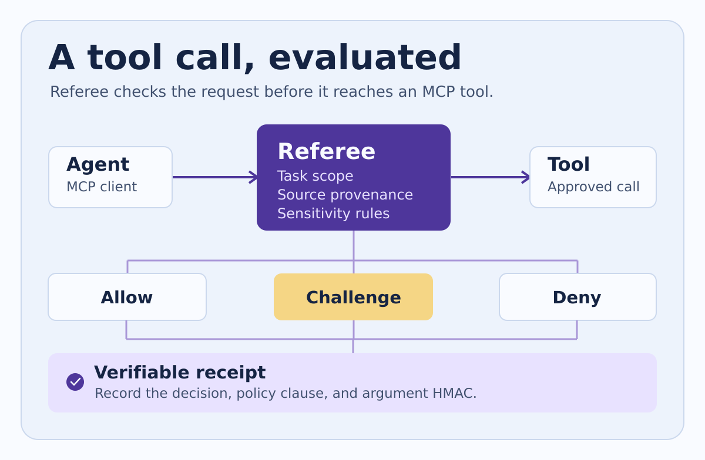

Referee v0.1.0
Put MCP tool calls under policy.
Referee sits between an agent and its tools. It checks provenance and sensitivity, enforces task-scoped permissions, and records why each call was allowed, challenged, or denied.

How a tool call is checked
Run Referee as an MCP proxy over stdio or streamable HTTP in JSON mode.
Check the task
Apply the configured tool and path rules with expiring, task-scoped capabilities.
Check the inputs
Evaluate influence and sensitivity. Apply policy-authorized redaction or route the call for human approval when needed.
Keep the evidence
Verify hash-chained receipts and export receipt metadata over OTLP/HTTP if you configure a collector.
Download Referee
Choose a v0.1.0 archive for your machine and verify it against the release checksums.